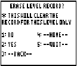
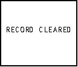
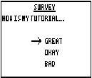
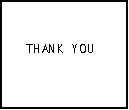

| HOME >> Tutorials >> Tutorial 23: User-Created Menus |
Introduction:
You've finally made it!! You've reached the end of version 2.0. This final tutorial will help make your programs, especially your games, unique and cool. As it says in the subtitle, we will be using getKey to make our own menus; what I call "user-created menus." We are going to do away with those boring menus that the calculator makes, and make our own with our own unique formatting and style.
The Codes:
There are two "user-created menus" that I know how to make. The first one, which will be in the proceeding code, looks somewhat like the normal menus, but a whole lot more customized. Let me tell you the features of this type of "user-created menu". This new menu type not only comes with a title and choices, but it can also include text description, which gives extra information about the menu. If you want to, you could have 15 different choices if there is enough space for all the text you want. In addition, the text for the choices isn't limited to 14 characters and on one line; you could have it be a whole paragraph on several lines, if you wanted. You could also underline/box-in the title, or even add a picture in the menu. Now that I've hyped you up for it, let me show you what I am talking about. I'm going to use a menu that I use in one of my games.
| : | For AShell, SOS, and TI-Explorer |
| AxesOff | Turns the graph axes off |
| FnOff | Deselects all the Y= functions |
| 0 |
Stores Xmin as 0 |
| 94 |
Stores Xmax as 94 |
| 0 |
Stores Ymax as 0 |
| -62 |
Stores Ymin as -62 |
| Lbl 1 | |
| ClrDraw | Clears the graph screen of all drawings |
| ClrHome | Clears the home screen |
| Text(0,11,"ERASE LEVEL RECORD? | Displays "ERASE LEVEL RECORD?" (2 spaces each) |
| Line(10,-7,82,-7 | Draws a horizontal line that'll underline the title |
| Text(10,0,"* THIS WILL CLEAR THE | Displays on graph screen "THIS WILL CLEAR THE |
| Text(17,0,"RECORD FOR THIS LEVEL ONLY | Displays on the graph screen "RECORD FOR THIS LEVEL ONLY" all on one line |
| Text(30,0,"1: NO | Displays option #1 "NO" |
| Text(40,0,"2: YES | Displays option #2 "YES" |
| Text(50,0,"3: --BACK-- | Displays option #3 "--BACK--" |
| Text(30,47,"4: --HOME-- | Displays option #4 "--HOME--" |
| Text(40,47,"5: --QUIT-- | Displays option #5 "--QUIT--" |
| While 1 | |
| getKey |
Stores the key's key code into user variable I |
| If I=92 or I=105:Goto 2 | If |
| If I=93:Goto 3 | If is pressed, go to Label 3 |
| If I=94:Goto 4 | If is pressed, go to Label 4 |
| If I=82:Goto 5 | If is pressed, go to Label 5 |
| If I=83:Goto 6 | If is pressed, go to Label 6 |
| End | End of the While loop |
| Lbl 2 | |
| Output(4,4,"RECORD NOT | Displays "RECORD NOT |
| Output(5,5,"CLEARED. | CLEARED" on two lines |
| Stop | End program execution |
| Lbl 3 | |
| Output(4,2,"RECORD CLEARED | Displays "RECORD CLEARED" |
| Stop | End program execution |
| Lbl 4 | |
| Output(4,4,"RETURNS TO | Displays "RETURNS TO PREVIOUS |
| Output(5,1,"PREVIOUS SCREEN. | SCREEN" on two lines |
| Stop | End program execution |
| Lbl 5 | |
| Output(4,2,"GOES BACK HOME | Displays "GOES BACK HOME" |
| Stop | End program execution |
| Lbl 6 | |
| Output(4,3,"GAME QUITTED | Displays "GAME QUITTED" |
| Stop | End program execution |
Possible output:
 and 
If you run the program and read the comments on the side of each command line you should fully understand what is supposed to happen. Let me just explain one thing, though. I do not know if you noticed but I got rid of the "While G=0" loop and its following "getKey I." The reasoning behind this is that we don't need it. We want it so that after we press our choice, it goes on to the rest of the program. We had those two command lines in the previous programs becuase we wanted to continue pressing other keys, until a special exit key was pressed. We do not want this program to continue to loop around. I also want to give you a reason why I put "NO" as choice #1 instead of "YES." The reason is that I think that most people wouldn't want to clear the record. Also, I made it so that "NO" could also be chosen by pressing
I." The reasoning behind this is that we don't need it. We want it so that after we press our choice, it goes on to the rest of the program. We had those two command lines in the previous programs becuase we wanted to continue pressing other keys, until a special exit key was pressed. We do not want this program to continue to loop around. I also want to give you a reason why I put "NO" as choice #1 instead of "YES." The reason is that I think that most people wouldn't want to clear the record. Also, I made it so that "NO" could also be chosen by pressing  just like you can in the calculator's menu. You can always choose the first choice by pressing either
just like you can in the calculator's menu. You can always choose the first choice by pressing either  or
or  . You thought this menu was fancy? Check out the next one.
. You thought this menu was fancy? Check out the next one.
| : | For AShell, SOS, and TI-Explorer |
| AxesOff | Turns the graph axes off |
| FnOff | Deselects all the Y= functions |
| 0 |
Stores Xmin as 0 |
| 94 |
Stores Xmax as 94 |
| 0 |
Stores Ymax as 0 |
| -62 |
Stores Ymin as -62 |
| Lbl 1 | |
| ClrDraw | Clears the graph screen of all drawings |
| ClrHome | Clears the home screen |
| Text(0,35,"SURVEY | Displays "SURVEY" |
| -33 |
Used to place the arrow in original position |
| -43 |
Used because B needs an initial valid value |
| Line(34,-7,58,-7 | Draws a horizontal line that'll underline the title |
| Text(10,0,"HOW IS MY TUTORIAL? | Displays on the graph screen "HOW IS MY TUTORIAL?" |
| Text(30,47,"GREAT | Displays option #1 "GREAT" |
| Text(40,47,"OKAY | Displays option #2 "OKAY" |
| Text(50,47,"BAD | Displays option #3 "BAD" |
| Lbl 2 | |
| Line(32,X,42,X | These three lines are used |
| Line(42,X,39,X+3 | to draw the arrow that will |
| Line(42,X,39,X-3 | move up and down |
| Line(32,B,42,B,0 | These three lines are used |
| Line(42,B,39,B+3,0 | to erase the previous arrow |
| Line(42,B,39,B-3,0 | that was drawn |
| While 1 | |
| getKey |
Stores the key's key code into user variable I |
| If I=25 or I=24:Goto UP | If |
| If I=34 or I=26:Goto DN | If |
| If I=105:Goto EN | If |
| End | End of the While loop |
| Lbl UP | |
| X |
The placement of arrow is stored in B to be erased |
| X+10 |
The arrow will move up on choice |
| If X=-23:Then | If the arrow will be placed too high, |
| -53 |
Make the arrow go to the last choice |
| -33 |
Erase that arrow on the top |
| End | End of the If-Then statement |
| Goto 2 | Go to Label 2 |
| Lbl DN | |
| X |
The placement of arrow is stored in B to be erased |
| X-10 |
The arrow will move down one choice |
| If X=-63:Then | If the arrow will be placed too low, |
| -33 |
Make the arrow go to the first choice |
| -53 |
Erase that arrow on the bottom |
| End | End of the If-Then statement |
| Goto 2 | Go to Label 2 |
| Lbl EN | |
| If X=-33:Goto 3 | ;If |
| If X=-43:Goto 4 | ;If |
| If X=-53:Goto 5 | ;If |
| Lbl 3 | |
| Output(4,4,"THANK YOU. | Displays "THANK YOU." |
| Stop | End program execution |
| Lbl 4 | |
| Output(3,4,"ONLY OKAY? | Displays "ONLY OKAY?" |
| Output(4,1,"WHAT CAN I DO TO | Displays "WHAT CAN I DO TO" |
| Output(5,1,"MAKE IT BETTER? | Displays "MAKE IT BETTER?" |
| Stop | End program execution |
| Lbl 5 | |
| Output(3,7,"BAD? | Displays "BAD?" |
| Output(4,1,"WHAT HAVE I DONE | Displays "WHAT HAVE I DONE" |
| Output(5,6,"WRONG? | Displays "WRONG?" |
| Stop | End program execution |
Possible output:
 and 
The code does seem long just to make one menu, but it's worth. All you have to do is use it once in a game to make your game stand out from the rest. I made the program so that if the user presses  or
or  that the arrow will go up, and if the user presses
that the arrow will go up, and if the user presses  or
or  that the arrow will move down. I also made it so that if you press up and the arrow is at the top, it will cycle down to the bottom and vice versa. At first, I had made the menu so that every time the arrow moved up or down, the screen would clear the old arrow and all the other text. Instead, I added "Y" so that I could just erase the previous arrow. This made the menu look better because it got rid of all the blinking of the screen.
that the arrow will move down. I also made it so that if you press up and the arrow is at the top, it will cycle down to the bottom and vice versa. At first, I had made the menu so that every time the arrow moved up or down, the screen would clear the old arrow and all the other text. Instead, I added "Y" so that I could just erase the previous arrow. This made the menu look better because it got rid of all the blinking of the screen.
Conclusion:
You have now finished the getKey series and completed all 23 tutorials! You should be very proud of yourself for making it this far! But guess what? You're not done yet. I felt bad for not having a Big Game #2 here at the end of version 2.0 so I came up with a project for you to complete. It should not be too difficult. The project is to combine these two "user-created menus" and make one "super menu." This "super menu" should contain the following:
If you do not understand a particular part in this lesson, have suggestions, or find any problems please contact me.
 |
 |
| Special Tutorial | Overview v3.0 |